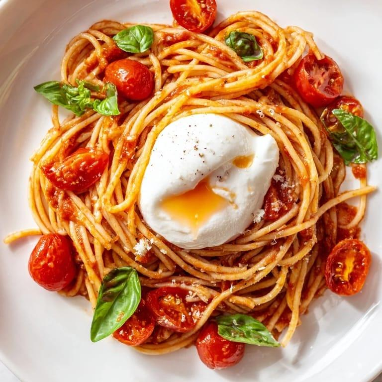

This miso tomato burrata pasta is a simple pasta dish made with cherry tomatoes, shallot, garlic, and miso paste. The tomatoes create a rich and savory sauce while the burrata adds a creamy finish. This recipe serves one person.
Source: TikTok recipe by @j8c1yn

Bon Appétit is a useful reference because it uses large food photography and strong typography to make its recipes visually appealing. I especially like how the photography attracts attention while the recipe information is still organized and easy to read.
NYT Cooking is a good reference because its recipe pages have a clear visual hierarchy and keep the information easy to scan. I like the separation between the recipe title, description, ingredients, and instructions, which could help organize my own page.
Food52 is a useful reference because its recipes have an editorial and lifestyle-oriented appearance. I like the balance of photography, typography, and white space because the page feels designed without making the recipe difficult to follow.
I like Kinfolk's minimal editorial style and its use of large photography with a lot of open space. I could use a similar approach to make food photography the main visual focus of my recipe page.
I like Aesop's restrained typography and neutral visual style. A similar approach could keep my recipe page simple and sophisticated while allowing the natural colors of the dish to stand out.
I like the way Pentagram uses strong typography, imagery, and structured layouts to create clear visual hierarchy. I could use similar ideas to distinguish the recipe title, ingredients, instructions, and supporting images on my page.